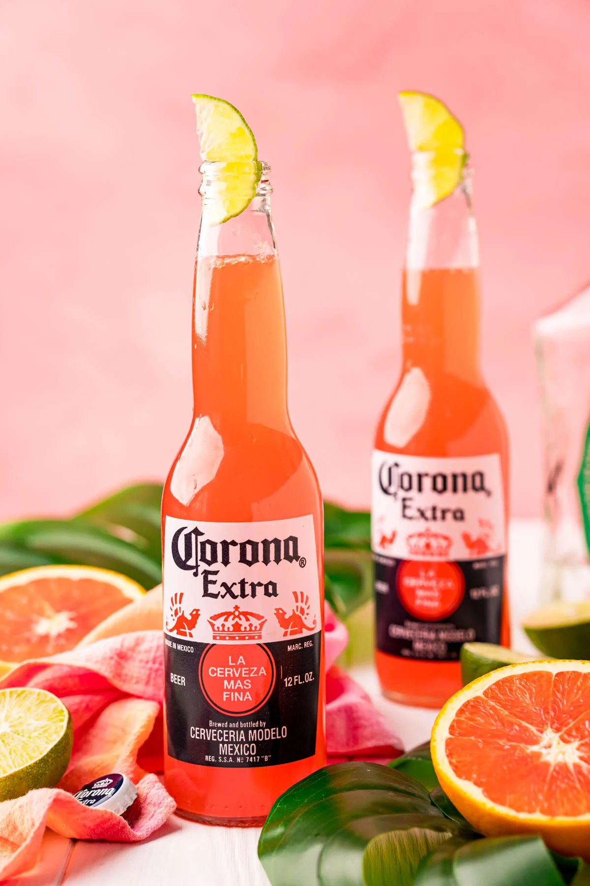

Corona Sunrise Recipe

Description
This recipe is one my friend suggested to me after I said I needed more drink recipes that use tequila. Im kind of tired of the only option i know about be a margarita.
This one is delicious and my mom already loves Corona so we always have some on hand
Ingredients
- 1.5 oz tequila
- 1 Corona
- 1.5 oz orange juice
- 0.5 oz grenadine
Steps
- Drink the Corona until you are at the top of the label
- Pour the other ingredients into the bottle
- Cover the mouth with your thumb and turn upside down so the ingredients all mix
- Serve and enjoy!